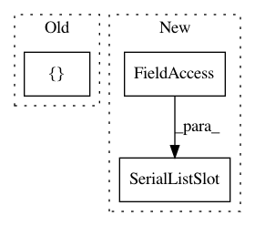

6dc71d15e7de4f0814625033d6814e0357a1fb2d,tests/test_applets/base/serializerTests.py,OpMockSerializer,__init__,#OpMockSerializer#Any#Any#,29
Before Change
class OpMockSerializer(AppletSerializer):
def __init__(self, operator, groupName):
slots = [SerialSlot(operator.TestSlot),
SerialSlot(operator.TestMultiSlot)]
super(OpMockSerializer, self).__init__(groupName,
slots)
After Change
def __init__(self, operator, groupName):
self.TestSerialSlot = SerialSlot(operator.TestSlot)
self.TestMultiSerialSlot = SerialSlot(operator.TestMultiSlot)
self.TestSerialListSlot = SerialListSlot(operator.TestListSlot,
autodepends=True)
slots = (self.TestSerialSlot,
self.TestMultiSerialSlot,
self.TestSerialListSlot)
super(OpMockSerializer, self).__init__(groupName,
In pattern: SUPERPATTERN
Frequency: 3
Non-data size: 3
Instances
Project Name: ilastik/ilastik
Commit Name: 6dc71d15e7de4f0814625033d6814e0357a1fb2d
Time: 2012-12-04
Author: kemal.eren@iwr.uni-heidelberg.de
File Name: tests/test_applets/base/serializerTests.py
Class Name: OpMockSerializer
Method Name: __init__
Project Name: ilastik/ilastik
Commit Name: 4a4d319f9152e0927043ec878934c4bb477974fe
Time: 2013-04-18
Author: anna.kreshuk@iwr.uni-heidelberg.de
File Name: ilastik/applets/objectClassification/objectClassificationSerializer.py
Class Name: ObjectClassificationSerializer
Method Name: __init__
Project Name: ilastik/ilastik
Commit Name: a725a64778311f5a3dd6f50551df5368245c1c9a
Time: 2019-04-09
Author: johannes.hugger@iwr.uni-heidelberg.de
File Name: ilastik/applets/networkClassification/nnClassSerializer.py
Class Name: NNClassificationSerializer
Method Name: __init__